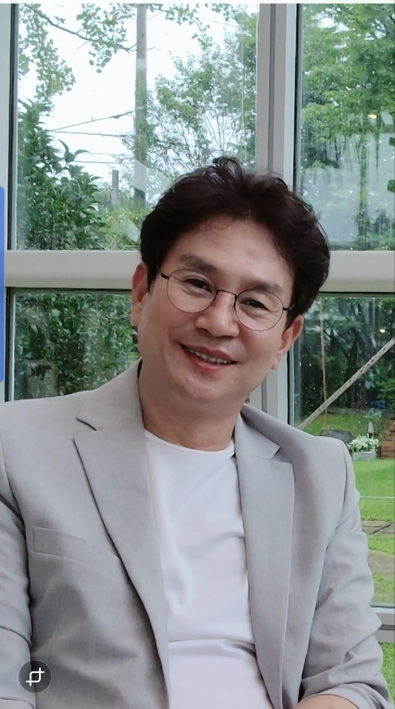

The First Bitgoeul Fashion Week 추진위원회
추진위원장 김영준
"패션과 뷰티를 사랑하는 모든 분들께 진심 어린 환영과 감사의 말씀을 드립니다.
우리는 The First Bitgoeul Fashion Week라는 이름으로 광주광역시에서 역사적인 첫걸음을 내딛게 되었습니다. 이번 패션위크는 이 도시의 빛과 열정을 세계 무대에 알리는 소중한 장이 될 것입니다.
이번 패션위크는 세계적인 디자이너들과 국내 정상급 디자이너들, 그리고 새로운 가능성을 지닌 아마추어 디자이너들까지 한자리에 모여, 창의성과 감각을 공유하는 국제적인 패션 축제입니다. 이를 통해 광주는 글로벌 패션 도시로 나아가는 새로운 출발을 맞이하게 될 것입니다.
특히, 패션은 단순히 의류에 그치지 않습니다. 패션은 곧 토탈 뷰티와 직결되어 있습니다. 헤어, 메이크업, 네일, 액세서리, 신발, 의류, 그리고 화장품까지—이 모든 토탈 뷰티 산업이 패션과 어우러져 하나의 완성된 예술을 만들어 냅니다. 이번 패션위크는 바로 그 '토탈 뷰티의 힘'을 보여주는 무대가 될 것입니다.
결론적으로, 뷰티는 패션과 함께 가는 하나의 큰 흐름이며, 서로를 완성시켜 주는 동반자임을 강조하고 싶습니다.
또한 이번 행사를 통해 광주광역시는 단순한 문화적 성과를 넘어, 관광·유통·뷰티·서비스 산업 전반에 걸친 경제적 효과를 얻게 될 것입니다. 이 패션위크는 지역 상권을 활성화시키고, 글로벌 투자와 교류의 기회를 넓히는 데 중요한 발판이 될 것입니다.
무엇보다도, 이 무대는 아마추어 디자이너와 신진 인재들에게 새로운 비전과 기회의 장을 열어 줄 것입니다. 이들의 창의적 시도와 열정이 바로 한국 패션과 뷰티 산업의 미래를 이끌어갈 자산이 될 것입니다.
The First Bitgoeul Fashion Week는 단발적인 행사가 아니라, 앞으로 꾸준히 이어가야 할 광주의 문화적·경제적 자산입니다. 이를 통해 광주는 아시아를 대표하는 패션·뷰티의 허브로 도약하게 될 것입니다.
이 뜻깊은 행사에 함께해 주신 모든 분들께 감사를 드리며, 이번 패션위크가 새로운 가능성과 희망을 열어가는 출발점이 되기를 진심으로 기원합니다.
BITGOEUL Fashion Week는 예향(藝鄕) 광주를 글로벌 패션의 새로운 허브로 도약시키고, 혁신적인 신인 디자이너들의 국제적 성장을 위한 견고한 발판을 마련하고자 기획되었습니다.
유구한 역사와 찬란한 문화예술의 혼이 깃든 광주는 전통과 현대가 아름답게 공존하는 도시입니다. 이 깊이 있는 광주의 예술적 토대 위에 패션이라는 현대 예술을 접목함으로써, 우리는 단순한 의류 쇼를 넘어 새로운 문화적 장을 펼쳐나가고자 합니다.
특히 광주가 중점적으로 육성하는 K-뷰티 산업과의 유기적인 융복합 시너지를 창출하여, 의상 그 자체의 아름다움을 넘어 헤어스타일링, 메이크업 그리고 다양한 뷰티 제품과 섬세한 액세서리 연출이 조화롭게 어우러지는 종합적인 아름다움의 정점을 선사할 것입니다. 이를 통해 패션과 뷰티가 선사하는 총체적인 아름다움을 선보일 것입니다.
이 특별한 무대는 재능 있는 디자이너들에게 자신의 비전과 창의성을 전 세계에 알릴 수 있는 기회를 제공하며, 다양한 국가의 패션 전문가 및 산업 관계자들을 광주로 초청하여 실질적인 비즈니스 네트워크를 구축하고 국제적인 교류를 활성화할 것입니다. 이를 통해 지역 산업의 발전과 경제 활력은 물론, 새로운 문화적 흐름을 주도하며 미래 지향적인 K-패션의 위상을 전 세계에 각인시키는 데 기여할 것입니다.
BITGOEUL Fashion Week is conceptualized to elevate Gwangju, a city renowned for its artistic heritage, into a new global fashion hub, while simultaneously providing a robust platform for the international growth of innovative emerging designers.
Gwangju, a city imbued with profound history and a brilliant cultural and artistic spirit, exquisitely harmonizes tradition with modernity. By integrating modern fashion with this deep artistic foundation, we aspire to transcend a mere apparel show and unfold a new cultural chapter.
Notably, we aim to create synergistic fusion with Gwangju's actively fostered K-Beauty industry, presenting the pinnacle of comprehensive beauty where garments' inherent beauty is complemented by harmoniously blended hair, makeup, and overall styling. Through this, we will showcase the holistic beauty offered by fashion and beauty.
This distinctive stage offers talented designers an opportunity to introduce their vision and creativity to the global community. Furthermore, by inviting fashion experts and industry stakeholders from various countries to Gwangju, we seek to establish tangible business networks and invigorate international exchange. Ultimately, this initiative will contribute not only to regional industrial development and economic vitality but also to leading new cultural trends and solidifying the global stature of K-Fashion.